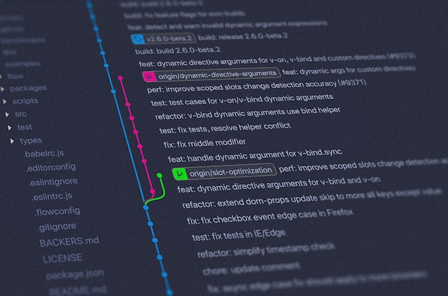

README file
A README file is a document that provides information about a project, such as its purpose, how to use it, and any other relevant details. It is usually the first thing people read to understand the project.
Read More about README filesWebpage explaining the purposes of a README file, Wireframe and Git Branches.
A README file is a document that provides information about a project, such as its purpose, how to use it, and any other relevant details. It is usually the first thing people read to understand the project.
Read More about README filesA wireframe is a visual guide that represents the skeletal structure of a website or application. It outlines the layout, content, and functionality without the final design elements.
Read more about Website Wireframes
A branch in Git is a separate line of development that allows you to work on different features. It enables multiple developers to collaborate on a project without interfering with each other's work.
Read more about Git branches